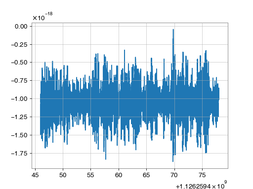

Plotting in GWpy (gwpy.plotter)¶
Visualisation of the data produced by gravitational-wave detectors is
obviously a key part of understanding their sensitivity, and studying the
potential gravitational-wave signals they record.
The gwpy.plotter module provides a number of plot classes, each
representing display of a corresponding data type.
Plotting data¶
The majority of core data objects in GWpy come with a built-in plot()
method, allowing quick display of a single data set, for example:
>>> from gwpy.timeseries import TimeSeries
>>> data = TimeSeries.fetch('H1:LDAS-STRAIN', 968654552, 968654562)
>>> plot = data.plot()
>>> plot.show()
(Source code, png)

Users can also import the relevant plotting class objects and generate
more complicated plots manually:
>>> data2 = TimeSeries.fetch('L1:LDAS-STRAIN', 968654552, 968654562)
>>> from gwpy.plotter import TimeSeriesPlot
>>> plot2 = TimeSeriesPlot()
>>> ax2 = plot2.gca()
>>> ax2.plot(data, color='k', linestyle='--')
>>> ax2.plot(data2, color='r', linestyle=':')
>>> plot2.show()
(Source code, png)


{kind=link}
{kind=link}